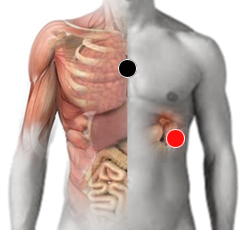
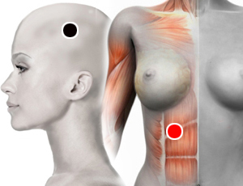

Enfisema pulmonar
esternón (timo) - bazo
pleura - pulmón *
cuerpo calloso - cuerpo calloso
epiclavio - epiclavio

* También revisar como pleura - escápula
Generalidades:
Destrucción de la pared alveolar, con o sin fibrosis manifiesta, es decir, pérdida de elasticidad pulmonar, lo que disminuye el aporte de oxígeno a la sangre. Forma parte de la Enfermedad Pulmonar Obstructiva Crónica (EPOC).
Síntomas respiratorios: tos, bronquitis, disnea, sibilancias, taquipnea (aumento de la frecuencia cardiaca), fatiga, ansiedad.
Tabaquismo. El par cuerpo calloso - cuerpo calloso puede ser útil para ayudar a superar la adicción al tabaco.
Par
parietal (I) - diafragma

Enfermedad Pulmonar Obstructiva Crónica (EPOC)
Consiste en la dificultad para respirar, generalmente es progresiva. Se puede presentar como bronquitis crónica o como Enfisema pulmonar o como una combinación de ambas. Los síntomas son similares a los de Enfisema Pulmonar.: tos, bronquitis, disnea, sibilancias, fatiga.